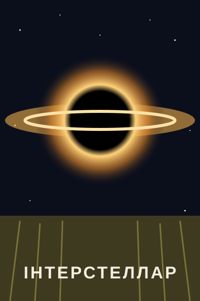
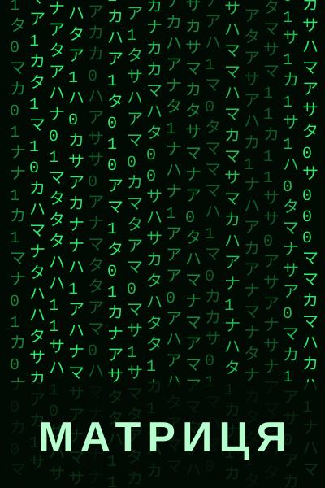
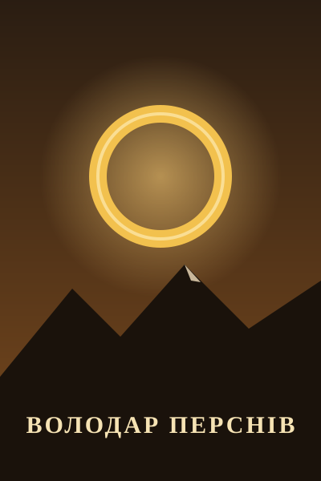
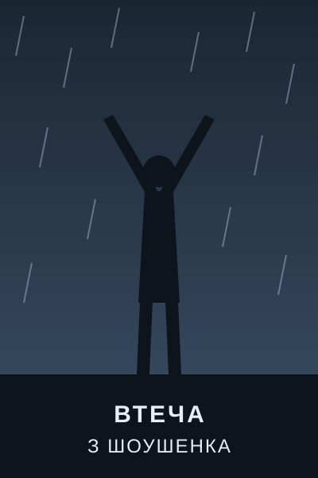
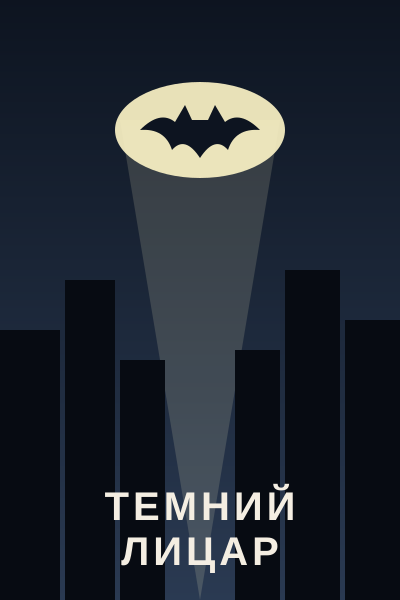
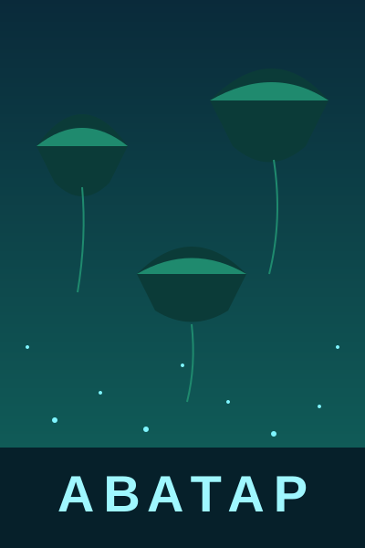

Прем'єри тижня, класика на великому екрані та бронювання місця за
хвилину — усе в одному кінотеатрі «Кіносвіт».
Про проєкт
«Кіносвіт» — це кінотеатр у центрі міста, де сучасні технології
показу поєднуються з затишною атмосферою. Три зали різного
формату дозволяють показувати як голлівудські блокбастери, так і
камерне авторське кіно.
Добірку фільмів ми формуємо щотижня, орієнтуючись на
прем'єри світового прокату, побажання глядачів і сезонні тематичні
показники. У афіші завжди можна знайти свіжі новинки, родинну
анімацію для вихідних, а також ретроспективи класики для тих, хто
цінує кіно як мистецтво.
Окрім самого перегляду, ми дбаємо про деталі: комфортні
крісла, якісний звук і зручне бронювання квитків онлайн.
«Найтепліший кінотеатр міста — сюди хочеться повертатися заради
самої атмосфери, а не лише заради фільму.» — місцевий кіножурнал
«Кадр»
Науково-фантастична драма Крістофера Нолана про колишнього пілота
Купера, який разом із командою науковців вирушає крізь червоточину
шукати нову домівку для людства. Фільм поєднує масштабні космічні
пейзажі з камерною історією про батька й доньку.
Показ супроводжується об'ємним звуком Dolby Atmos у Залі №1 —
рекомендуємо бронювати місця заздалегідь, оскільки прем'єрні
сеанси традиційно розкуповуються швидко.
«Аватар»
Науково-фантастична пригода Джеймса Кемерона про колишнього
морпіха Джейка Саллі, який у тілі аватара потрапляє на Пандору й
опиняється між земною корпорацією та народом на'ві.
Галерея






Наші зали
Кінотеатр працює у трьох залах різного формату: великий зал для
прем'єр і блокбастерів, камерний зал для авторського кіно та
родинний зал із м'якими диванами для вихідних переглядів. У
кожному залі встановлено сучасне проєкційне обладнання та
комфортні крісла з регульованим нахилом спинки.